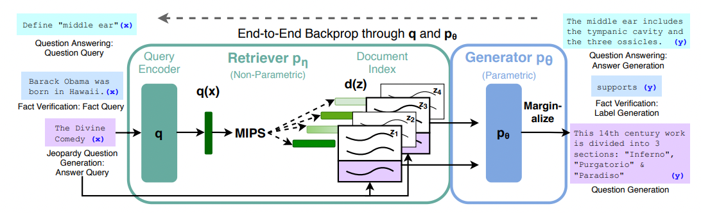

graph LR A[Who was Cleopatra?] --> B[LLM] B --> C[Cleopatra was a famous Egyptian queen.] style A fill:#fff,stroke:#000,color:#000 style B fill:#fff,stroke:#000,color:#000 style C fill:#fff,stroke:#000,color:#000 linkStyle 0 stroke:#000, stroke-width:1px, stroke-linecap:butt; linkStyle 1 stroke:#000, stroke-width:1px, stroke-linecap:square;
RAG: Retrieval Augmented Generation for Knowledge-Intensive NLP Task.
LLM이 가진 약점을 타파하려는 현시점 가장 유의미한 시도를 정리합니다.
Large Language Model, Open-Domain Question Answering
일반적으로 LLM은 방대한 양의 데이터를 기반으로 사전학습(Pre-Trained)된 GPT Based Model을 의미한다. GPT는 Next-Token-Prediction을 수행하는 Pretraining 과정을 거치며 자연어 테스크들에서 유의미한 성과들을 보여왔다.
LLM을 활용하려는 시도 중 하나는 LLM에 질문을 하고 올바른(품질이 좋은) 답변을 얻는 것이다. 이러한 분야를 Open-Domain Question Answering(ODQA)라고 정의한다. 따라서 ODQA에서는 input text를 question으로, output text를 answer로 하는 Framework로 정의한다.
질문을 입력하면 답변을 생성한다는 점에서 LLM을 QA Task에서 생성하는 것이 굉장히 주목을 받게 되었다. 그런데 답변을 생성해내는 것까지는 좋은 일인데, LLM에 아주 잘못된 입력을 해도 그럴듯하게 답변을 생성해내는 Hallucination 현상이 대두되었다.
graph LR A[Who is the brave Korean Cleopatra?] style A fill:#fff,stroke:#000,color:#000 B[LLM] style B fill:#fff,stroke:#000,color:#000 C[She was a very brave and famous independence activist.] style C fill:#fff,stroke:#000,color:#000 A --> B linkStyle 0 stroke:#000, stroke-width:1px, stroke-linecap:butt; B --> C linkStyle 1 stroke:#000, stroke-width:1px, stroke-linecap:butt;
Example of Hallucination
또한, QA Task의 용도로 사용하기에는 단편적이고 간단한 답변을 내놓는 경향이 있다. 이러한 단점을 보강하기 위해 한동안은 Hallucination을 피하고 답변의 생성을 도와주기 위해 Context를 붙이는 방식이 선호되었다.
graph LR A[Who is the brave Korean Cleopatra?] style A fill:#fff,stroke:#000,color:#000 B[LLM] style B fill:#fff,stroke:#000,color:#000 C[She was a very brave and famous independence activist.] style C fill:#fff,stroke:#000,color:#000 subgraph Context D[We are talking about ancient romain history.] style D fill:#fff,stroke:#000,color:#000 end style Context fill:#fff,stroke:#000,color:#000 A --> B linkStyle 0 stroke:#000, stroke-width:1px, stroke-linecap:butt; B --> C linkStyle 1 stroke:#000, stroke-width:1px, stroke-linecap:butt; D --> B linkStyle 2 stroke:#000, stroke-width:1px, stroke-linecap:butt;
Context를 입력 프롬프트에 추가하는 방식이 동작하는 이유는 근본적으로 GPT는 Next Token Prediction을 수행하는 모델이기 때문이다. 앞서 등장한 Token들과 연관이 큰 답변을 생성해야하니 Context를 잘 조절하면 Hallucination을 막는것은 물론 질 좋은 답변을 생성하는 데에도 도움이 된다.
그러나 세상에 존재하는 Question은 사실상 무한하고, Question마다 의미있는 Context를 생성하는 작업은 무척 비효율적이다. 또한, Knowledge Intensive한 경우 Context를 생성하는 비용 자체가 비싸다는 단점이 있다. RAG(Retrieval Augmented Generation)은 이러한 문제를 해결하기 위해 제시되었다.
Abstract
Large pre-trained language models have been shown to store factual knowledge in their parameters, and achieve state-of-the-art results when fine-tuned on downstream NLP tasks. However, their ability to access and precisely manipulate knowledge is still limited, and hence on knowledge-intensive tasks, their performance lags behind task-specific architectures.
- 대규모 사전훈련 모델은 사실적인 정보들을 파라미터에 저장하고, 이를 통해 downstream NLP task에서 state-of-the-art 결과를 보여왔다.
- 그런 연구들에서 지식을 정밀하게 조작하고 접근하는 능력은 한계가 있었고, 그러므로 이러한 구조는 knowledge-intensive한 task들에서는 성능저하가 발생했다.
Additionally, providing provenance for their decisions and updating their world knowledge remain open research problems.
- 추가적으로, 모델의 decisions에 대한 근거를 제공하거나 새로운 knowledge를 업데이트 하는 것은 여전히 문제로 남아있다
We explore a general-purpose fine-tuning recipe for retrieval-augmented generation (RAG) — models which combine pre-trained parametric and non-parametric memory for language generation. We introduce RAG models where the parametric memory is a pre-trained seq2seq model and the non-parametric memory is a dense vector index of Wikipedia, accessed with a pre-trained neural retriever.
- 우리는 검색증강 생성(RAG)을 위한 fine-tunning recipe를 찾아보았고, 언어 생성을 위한 pretrained parametric 모델과 non-parametric memory로 구성된 모델구조를 제안한다.
- RAG 모델은 사전훈련된 Seq2Seq 모델과 Dense Vector로 구성된 Knowledge Index, 그리고 Index에 접근하기 위한 pre-trained neural retriever로 구성되었다.
Introduction
Pre-trained neural language models have been shown to learn a substantial amount of in-depth knowledge from data. They can do so without any access to an external memory, as a parameterized implicit knowledge base. While this development is exciting, such models do have downsides: They cannot easily expand or revise their memory, can’t straightforwardly provide insight into their predictions, and may produce “hallucinations”.
- pre-trained neural language models은 데이터로부터 상당한 양의 지식을 배우는 것으로 보여졌고, external memory나 knowledge base에 접근하지 않고서도 가능하다고 여겨졌다.
- 이런 발전은 흥미로웠지만, memory를 쉽게 확장하거나 수정하지 못했고 prediction에 대한 직접적인 근거를 제시하지 못했고, Hallucinations를 발생시켰다.
Here, we bring hybrid parametric and non-parametric memory to the “workhorse of NLP,” i.e. sequence-to-sequence (seq2seq) models. We build RAG models where the parametric memory is a pre-trained seq2seq transformer, and the non-parametric memory is a dense vector index of Wikipedia, accessed with a pre-trained neural retriever.
- 우리는 NLP Task에서는 정석이라고 할 수 있는 Seq2Seq 모델을 활용한 Parametric Memory와 Non-Parametric Memory를 구성했다.
- RAG models의 parametric memory는 seq2seq transformer이고, non-parametric memory는 wikipedia를 활용한 dense vector index이다. 이때의 dense vector를 생성하는 pre-trained neural retriever를 포함한다.

Method
We explore RAG models, which use the input sequence x to retrieve text documents z and use them as additional context when generating the target sequence y.
- 우리가 RAG model을 다룰 때, input sequence x에 대해 text document 집합인 z를 검색하고, 이러한 z들을 additional context로 사용하여 target sequence y를 생성하는데에 사용한다.
In one approach, RAG-Sequence, the model uses the same document to predict each target token. The second approach, RAG-Token, can predict each target token based on a different document. In the following, we formally introduce both models and then describe the pη and pθ components, as well as the training and decoding procedure.
- generation 단계에서 z를 사용하는 방식에 따라 RAG-Sequence와 RAG-Token 방식으로 구분한다.
- Rag-Sequence은 각 token(1개의 output prediction에 사용된)을 예측하기 위해 같은 문서를 사용하고, Rag-Token은 각 token을 예측하기 위해 다른 문서를 사용한다
Models
Retriever: DPR
\(p_{\eta}(z|x) \propto\ exp \left(d(z)\right)^T q(x)\)
The retrieval component pη(z|x) is based on DPR [26]. DPR follows a bi-encoder architecture: where d(z) is a dense representation of a document produced by a BERTBASE document encoder [8], and q(x) a query representation produced by a query encoder, also based on BERTBASE.
- RAG의 retriever는 DPR로부터 가져온 것이다.
- DPR은 Bert로 구성된 Bi-Encoder 구조를 가지고 있는데, \(d(z)\)는 document를 색인할 벡터 데이터베이스를 생성하는 용도의 encoder이고, \(q(x)\)는 입력 쿼리를 encoding하는 용도이다.
- Non-Parametric Memory라고 한다.
RAG-Sequence
The RAG-Sequence model uses the same retrieved document to generate the complete sequence. Technically, it treats the retrieved document as a single latent variable that is marginalized to get the seq2seq probability p(y|x) via a top-K approximation. Concretely, the top K documents are retrieved using the retriever, and the generator produces the output sequence probability for each document, which are then marginalized,
\(P_{RAG-Sequence}(y|x) \approx \sum_{z \in top-k(p(\cdot|x))} p_{\eta}(z|x)p_{\theta}(y|x,z) = \sum_{z \in top-k(p(\cdot|x))} p_{\eta}(z|x) \prod_{i}^{N} p_{\theta}(y_{i}|x,z,y_{1:i-1})\)
- 1개의 output prediction이 token \(\{y_1, ..., y_N\}\)로 구성되었다고 가정한다.
- \(y_i\)번째 token을 구할 때, \(y_1\)부터 \(y_{i-1}\)까지의 token과 latent document z1을 사용한다.
- \(p(y_1) \leftarrow p(x, z_1, y_0)\) , 아직 \(y_0\)는 존재하지 않음
- \(p(y_2) \leftarrow p(x, z_1, y_1)\)
- \(p(y_3) \leftarrow p(x, z_1, y_{(1, 2)})\)
- \(p(y_4) \leftarrow p(x, z_1, y_{(1, 2, 3)})\)
- …
- \(p(y_N) \leftarrow p(x, z_1, y_{1:N-1})\)
- k개의 z를 retriever로부터 찾아왔다는 가정이므로 k개의 document에 대해 반복할 수 있다.
- 각 자리(\(1, .., N\))별로 존재하는 K개의 Token을 marginalize한다.
RAG-Token
In the RAG-Token model we can draw a different latent document for each target token and marginalize accordingly. This allows the generator to choose content from several documents when producing an answer. Concretely, the top K documents are retrieved using the retriever, and then the generator produces a distribution for the next output token for each document, before marginalizing, and repeating the process with the following output token, Formally, we define:
\(P_{RAG-TOKEN}(y|x) \approx \prod_{i}^{N} \sum_{z \in top-k(p(\cdot|x))}p_{\eta}(z|x)p_{\theta}(y_{i}|x,z,y_{1:i-1})\)
- 1개의 output prediction이 token \(\{y_1, ..., y_N\}\)로 구성되었다고 가정한다.
- \(y_i\)번째 token을 구할 때, \(y_1\)부터 \(y_{i-1}\)까지의 token을 준비한다.
- 이 토큰들과 latent \(z_1\)를 가지고 \(y_i\) token 확률을 구한다.
- 이 토큰들과 latent \(z_2\)를 가지고 \(y_i\) token 확률을 구한다.
- …
- 이 토큰들과 latent \(z_k\)를 가지고 \(y_i\) token 확률을 구한다.
- 구해진 k개의 token 후보들을 가지고 marginalize하여 \(y_i\)번째 token을 구한다.
Generator: BART
The generator component pθ(yi |x, z, y1:i−1) could be modelled using any encoder-decoder. We use BART-large [32], a pre-trained seq2seq transformer [58] with 400M parameters. To combine the input x with the retrieved content z when generating from BART, we simply concatenate them. BART was pre-trained using a denoising objective and a variety of different noising functions.
- generator \(p_{\theta} (y_{i}|x, z, y_{1:i-1})\) 는 BART-Large 400M 모델을 사용한 encoder-decoder 구조이다.
- input query x와 retrieved document z를 심플하게 concatenate하였다.
- Parametric Memory라고 부른다.